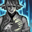
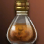
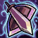
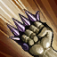
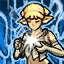
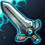

Eviscerator
Eviscerator · 1 new skills on Project4
Holy FormLv. 3New
For 5 min., Holy Attack +10, Holy Resistance +3.
Alchemy Cube
Can use the Alchemy Cube. Elementary Combination Alchemy.
Back StepLv. 5
Disables targeting and retreats backwards, increasing P. Atk. by 20% and success of Knock Down by 50 for 5 sec. Requires a fist weapon.
Backspin ImpactLv. 31
Uses the wind energy to attack the target at a distance stunning them for 3 sec.
Deals damage equal to 85% of P. Atk.
Requires a fist weapon.
Base success rate: 70%
Attack type: Stun (Physical)
Deals damage equal to 85% of P. Atk.
Requires a fist weapon.
Base success rate: 70%
Attack type: Stun (Physical)
Bear Spirit Totem
Summons a bear's spirit. For 5 min., P. Atk. and Critical Damage for basic attacks +20%, Speed -30%. Requires a fist weapon.
Bison Spirit Totem
Summons a bison's spirit. Instantly restores 10% HP. For 1 min., P. Accuracy +6. When HP<60%, P. Atk. +10%, Critical Rate for basic attacks +100. When HP<30%, P. Atk. +30%, Critical Rate for basic attacks +300. Requires a fist weapon.
Chin StrikeLv. 28
A blow to the jaw. Knocks the target down for 3 sec. Requires a fist weapon.
Base success rate: 70%
Attack type: Knockdown (Physical)
Base success rate: 70%
Attack type: Knockdown (Physical)
Crushing AirLv. 19
Crushes the air to decrease target's battle strength. Requires a fist weapon.
Distant KickLv. 18
Attacks enemies at the front knocking them down.
Deals damage equal to 98% of P. Atk.
Requires a fist weapon.
Base success rate: 60%
Attack type: Knockdown (Physical)
Deals damage equal to 98% of P. Atk.
Requires a fist weapon.
Base success rate: 60%
Attack type: Knockdown (Physical)
DistortionLv. 5
For 60 sec., distorts space to make attacks from any side as efficient as from behind. P. Atk. +5%, Critical Damage for basic attacks +5%, P. Skill Power +5%. Requires a fist weapon.
Earth Fist
Strikes with the fist making a fissure in the ground.
For 25 sec., P. Atk. +10%, range of basic attacks +80. Also, basic attacks affect up to 4 enemies at once.
Consumes 15 Soulstones.
Requires a fist weapon.
For 25 sec., P. Atk. +10%, range of basic attacks +80. Also, basic attacks affect up to 4 enemies at once.
Consumes 15 Soulstones.
Requires a fist weapon.
Fluid WeaveLv. 3
With a 50% chance when hit with a P./ M. skill, cancels received damage and protects from 1 debuff(s) for 3 sec. Requires a fist weapon.
<font color="B09B79">Type: Debuff barrier.</font>
Full protection from debuffs for a certain number of times.
Does not stack.
<font color="B09B79">Type: Debuff barrier.</font>
Full protection from debuffs for a certain number of times.
Does not stack.
Flying Knee KickLv. 15
Flying Knee. Knocks the target down for 3 sec. Requires a fist weapon.
Base success rate: 70%
Attack type: Knockdown (Physical)
Base success rate: 70%
Attack type: Knockdown (Physical)
Gravity Barrier
Removes debuffs and makes you invincible to debuffs and damage.
Gravity HitLv. 20
Jumps hitting the target with a charged fist.
Deals damage equal to 101% of P. Atk.
Ignores 1% of the target's P. Def.
Requires a fist weapon.
Deals damage equal to 101% of P. Atk.
Ignores 1% of the target's P. Def.
Requires a fist weapon.
Gravity PowerLv. 7
For 30 min., P. Atk. +30%, Confusion/ Danger Zone Resistance +30.
Gravity ShockLv. 14
Strikes the ground with fists enhanced with the wind energy.
Attacks nearby enemies dealing damage equal to 100% of P. Atk. and pulling them to you.
Requires a fist weapon.
Base success rate: 60%
Attack type: Knockdown (Physical)
Attacks nearby enemies dealing damage equal to 100% of P. Atk. and pulling them to you.
Requires a fist weapon.
Base success rate: 60%
Attack type: Knockdown (Physical)

Gravity Switch
For 30 min., changes the effect of Heavy Punch. With a certain chance, deals additional damage equal to P. Atk. x5 on a basic attack.
The HP-decreasing effect is not applied.
The HP-decreasing effect is not applied.
Grounding
Accumulates the earth's energy.
For 60 sec., P. Atk. +3%, P. Accuracy +20. When using Earth Fist, duration +25%.
Consumes 15 Soulstones.
Requires a fist weapon.
For 60 sec., P. Atk. +3%, P. Accuracy +20. When using Earth Fist, duration +25%.
Consumes 15 Soulstones.
Requires a fist weapon.

HP Replenishing Potion of Wind
Creates HP Replenishing Potion of Wind via the alchemical transformation. Grade: Novice.
Hawk Spirit Totem
Summons a hawk's spirit. For 5 min., P. Accuracy +6, Critical Rate for basic attacks +10%, Critical Damage for basic attacks +30%. Requires a fist weapon.
Heavy HandLv. 15
Increases the effect of gravity on nearby enemies to slow them down and block them from teleporting. Requires a fist weapon.
Lateral HitLv. 32
Attacks the target from the flank dealing damage equal to 84% of P. Atk. For 20 sec., the target's P. Def. -10%.
If the target is stunned, power +20%.
Requires a fist weapon.
Base success rate: 70%
If the target is stunned, power +20%.
Requires a fist weapon.
Base success rate: 70%
Left SidestepLv. 28
Disables targeting and finds weakness to the enemy's left. Stuns the enemy for 5 sec. Requires a fist weapon.
Base success rate: 70%
Attack type: Stun (Physical)
Base success rate: 70%
Attack type: Stun (Physical)
Ogre Spirit Totem
Summons an ogre's spirit. For 5 min., P. Atk. and P./ M. Def. +30%, Critical Damage for basic attacks +10%. Requires a fist weapon.
Powerful GravityLv. 2
For 30 min., P. Atk. +40%, Critical Damage for basic attacks +20%, P. Def. +10%, M. Def. +10%, Confusion/ Danger Zone Resistance +30. Consumes 15 Soulstone(s).
Puma Spirit Totem
Summons a Puma's spirit. P. Accuracy +6, Atk. Spd. +20% for 5 min. Requires a fist weapon.
Rabbit Spirit Totem
Summons a Rabbit's spirit. For 5 min., Atk. Spd. +30%, Speed +30%, P. Evasion +12. Requires a fist weapon.
Relax
While sitting, recovers HP, MP and CP quickly. Can not be used in combat. Consumes 10 Relax Holy Water.
Reverse WeightLv. 15
Unleashes the air energy at enemies knocking them down.
Deals damage equal to 96% of P. Atk.
Damage is increased with a number of targets.
Requires a fist weapon.
Base success rate: 60%
Attack type: Knockdown (Physical)
Deals damage equal to 96% of P. Atk.
Damage is increased with a number of targets.
Requires a fist weapon.
Base success rate: 60%
Attack type: Knockdown (Physical)
Right SidestepLv. 31
Disables targeting and finds weakness to the enemy's right. Decreases enemy's resistance to fist weapons by 10% for 5 sec. The decrease in resistance is not cancelled when striking. Requires a fist weapon.
Spallation
Disintegrates the space around you. For 30 sec., protects from ranged attacks and debuffs, P. Def. +50%.
Damage is only dealt if the enemy is close to you inside the area of effect.
Requires a fist weapon.
Does not work with Gravity Barrier.
<font color="ECECEC">Type: Invincibility.</font>
Immunity to ranged attacks and debuffs
Damage is only dealt if the enemy is close to you inside the area of effect.
Requires a fist weapon.
Does not work with Gravity Barrier.
<font color="ECECEC">Type: Invincibility.</font>
Immunity to ranged attacks and debuffs
Spinning KickLv. 15
Kicks the target in the stomach.
Deals damage equal to 106% of P. Atk.
Ignores Shield Defense.
Requires a fist weapon.
Deals damage equal to 106% of P. Atk.
Ignores Shield Defense.
Requires a fist weapon.
Stamp PunchLv. 8
A powerful attack that deals damage equal to 113% of P. Atk.
Ignores 5% of the target's P. Def.
If the target is knocked down, the power is increased by 20%.
Requires a fist weapon.
Ignores 5% of the target's P. Def.
If the target is knocked down, the power is increased by 20%.
Requires a fist weapon.
Steel MindLv. 5
For 30 sec., P. Atk. +15%, Critical Damage for basic attacks +10%, P. Skill Critical Damage +10%, Speed +50, Confusion/ Danger Zone/ Obstruction Resistance +90. Inflicts additional damage 5 times stronger than a basic attack, but HP cannot decrease lower than 1. Recovers 30% HP when the effect expires. Requires a fist weapon.
<font color="ECECEC">Type: Immortality.</font>
HP do not decrease below 1.
Does not stack.
<font color="ECECEC">Type: Immortality.</font>
HP do not decrease below 1.
Does not stack.
Summon Eviscerator Fox
Allows to mount the Eviscerator's pet fox.
Warped Space
Holds nearby enemies by energy of earth. Requires a fist weapon.
Base success rate: Guaranteed
Attack type: Hold (Magic)
Base success rate: Guaranteed
Attack type: Hold (Magic)
Wolf Spirit Totem
Summons a Wolf's spirit. P. Accuracy +3, Speed +20% for 5 min. Requires a fist weapon.

Accuracy BonusLv. 7
Increases P./ M. Accuracy.
Divine InspirationLv. 4
Buff slots +1.
Divine Wind
Wind/ Holy Resistance +10.
Eminent AbilityLv. 3
Depending on your STR, gives a chance to reset skill cooldown or increase the effect's duration by 2 times.
Eminent Attack Movement
Speed and P/ M. Def. have a chance to increase every time you receive damage.
Eminent Attribute ResistanceLv. 13
Attribute Attack +10, Fire/ Water/ Wind/ Earth/ Holy Resistance +10.

Eminent Fist Weapon MasteryLv. 19
When using a fist weapon, P. Atk. +129.3, Atk. Spd. +10%.
Eminent Light Armor MasteryLv. 19
When using light armor, P. Def. +65.6, P. Evasion +7, received Critical Rate -35%.
Eminent StabilityLv. 15
Max CP +2%, Max HP +1%, P. Def. +1%, M. Def. +1%.
Eviscerator Force
P. Skill Critical Rate +1%.
Eviscerator's Defense MasteryLv. 4
When the sigil is equipped, P. Atk. +3%, Critical Damage for basic attacks and P. skills +3%.
Eviscerator's Glory
You feel the elite Eviscerator's noble power.
P. Atk. +5%, Critical Damage for basic attacks +7%, P./ M. Def. +5%.
P. Atk. +5%, Critical Damage for basic attacks +7%, P./ M. Def. +5%.

Expert
MP Consumption -1%.
Heavy Punch
With a certain chance, deals damage equal to 30% of the target's HP on a basic attack. A direct hit. Requires a fist weapon.
Infighter
Using Left/Right Sidestep increases P. Critical Rate.
Masia's ShieldLv. 5
Through Masia's Shield's protection, received damage -10%.
Tenacity
Max HP +1%, Speed +4.
Sayha's Seer
Sayha's Seer · 5 new skills on Project4
Holy WeaponNew
Transformation skill
For 20 min., your Holy Attack +20. Ends when you leave the stance.
InquisitorNew
Healer hunting stance. Holy attack magic, Self Heal, Holy Weapon and Superior Inquisition, closed when you leave it.
Only out of combat (15 sec. cast). Switch Stance (15 sec.) to return.
Only out of combat (15 sec. cast). Switch Stance (15 sec.) to return.
Superior InquisitionNew
Transformation skill
M. Atk. +30%, MP Consumption +10%. Consumes 30 HP per sec. M. Skill Power +1% per 30 Heal Power above 300 (max +10%), +1% per 5 MEN above 60 (max +8%) and +1% per 200 Max MP above 5000 (max +10%). Ends when you leave the stance.
Switch StanceNew
Transformation skill
Leaves the Inquisitor / Vanguard / Golem Armor stance (15 sec. cast).
Alchemy Cube
Can use the Alchemy Cube. Elementary Combination Alchemy.
Arcane Wisdom
Maximizes spells' efficiency. Casting Spd. -10%, MP Consumption -30%. Consumes 30 HP per sec.
Balance HealLv. 6
Equalizes the entire party's HP and restores 333 HP/ second for 15 sec.
Blessed ResurrectionLv. 4
Resurrects the target.
Additionally, restores 85% XP.
The skill cooldown is fixed.
Additionally, restores 85% XP.
The skill cooldown is fixed.
Brilliant HealLv. 20
Recovers your HP and that of your nearby party members with 1191 power. If HP is full, recovers CP.
Brilliant PurgeLv. 7
Removes debuffs from all party members; for 10 sec., their Debilitation/ Confusion/ Obstruction/ Stupor/ Infection/ Petrification/ Pull/ Danger Zone Resistance +500. Additionally, P./ M. Def. +15%.
<font color="B09B79">Type: Debuff Resistance bonus.</font>
Greatly increases Debuff Resistance.
Does not stack with other effects of the following types: <font color="B09B79">Debuff Resistance bonus and Immunity to debuffs</font>.
<font color="B09B79">Type: Debuff Resistance bonus.</font>
Greatly increases Debuff Resistance.
Does not stack with other effects of the following types: <font color="B09B79">Debuff Resistance bonus and Immunity to debuffs</font>.
Celestial Party ProtectionLv. 6
For 10 sec., grants invincibility to all party members.
The identical effects do not stack. Also, applies <font color="ECECEC">Defense Limit</font> on the target.
<font color="B09B79">Type: Invincibility.</font>
Immunity to damage and debuffs
<font color="ECECEC">Defense Limit</font>
For 90 sec., Celestial Protection, Celestial Party Protection, and Celestial Aegis cannot be applied.
The identical effects do not stack. Also, applies <font color="ECECEC">Defense Limit</font> on the target.
<font color="B09B79">Type: Invincibility.</font>
Immunity to damage and debuffs
<font color="ECECEC">Defense Limit</font>
For 90 sec., Celestial Protection, Celestial Party Protection, and Celestial Aegis cannot be applied.
Celestial ProtectionLv. 6
For 10 sec., grants invincibility to a party member.
The identical effects do not stack.
<You are targeted automatically>
<font color="B09B79">Type: Invincibility.</font>
Immunity to damage and debuffs
The identical effects do not stack.
<You are targeted automatically>
<font color="B09B79">Type: Invincibility.</font>
Immunity to damage and debuffs
Divine PowerLv. 6
For 15 sec., Healing Power +1000.
Divinity of EinhasadLv. 6
For 30 sec., M. Skill MP Consumption -30%. With a 100% chance, makes Radiant Heal, Panic Heal, and Brilliant Heal critical.
Consumes 5 Spirit Ore.
Consumes 5 Spirit Ore.
Emblem of Salvation
Resurrects yourself fully recovered.
Maintains buffs and debuffs even after death.
Exceptions: Noblesse Blessing and Lucky Charm.
The skill cooldown is fixed.
<You are targeted automatically>
Maintains buffs and debuffs even after death.
Exceptions: Noblesse Blessing and Lucky Charm.
The skill cooldown is fixed.
<You are targeted automatically>
EraseLv. 10
Banishes the enemy's servitor to another dimension. Consumes 3 Spirit Ore.
Attack type: Confusion
Attack type: Confusion
HP Replenishing Potion of Wind
Creates HP Replenishing Potion of Wind via the alchemical transformation. Grade: Novice.
InvocationLv. 10
For 30 sec., P. Def. -90%. Recovers 54 MP per sec. The effect is cancelled when hit. The skill cooldown is fixed.
Life Balance
Equalizes HP of all party members.
Magical BackfireLv. 15
For 1 min., nearby enemies' M. Skill MP Consumption +200%.
Base success rate: 70%
Base success rate: 70%
Mana BurnLv. 10
Burns up the enemy's MP with 117 power.
Panic HealLv. 20
Recovers the target's HP with 1488 power. If HP is full, recovers CP.
<You are targeted automatically>
<You are targeted automatically>
PrayerLv. 8
For 20 min., all party members' Received Healing +8%.
Progressive HealLv. 6
Heals target and the 10 most injured allies around target by up to 24% of their Max HP. The recovery amount decreases starting from the most injured person.
Radiant HealLv. 20
Recovers the target's HP with 1488 power. If HP is full, recovers CP.
<You are targeted automatically>
<You are targeted automatically>
Radiant PurgeLv. 6
Removes debuffs from the target.
Does not work on enemies.
Does not work on enemies.
RebirthLv. 6
Fully recovers party members' HP/ MP/ CP and removes debuffs from them.
The skill cooldown is fixed.
The skill cooldown is fixed.
Relax
While sitting, recovers HP, MP and CP quickly. Can not be used in combat. Consumes 10 Relax Holy Water.
ReposeLv. 7
Decreases the undead's aggression.
Attack type: Confusion
Attack type: Confusion
Restore LifeLv. 9
Recovers 9% HP.
ResurrectionLv. 8
Resurrects a corpse. Restores 20% of lost XP. The skill cooldown is fixed.
Sublime Self-SacrificeLv. 6
Sacrifices oneself to allow all other party members to fully recover their HP/ MP/ CP and become invincible for 15 sec.
<font color="B09B79">Type: Invincibility.</font>
Immunity to damage and debuffs
<font color="B09B79">Type: Invincibility.</font>
Immunity to damage and debuffs
Summon Tree of Life
Summons Tree of Life.
The summoned tree heals nearby party members for 60 sec. and removes debuffs from them.
The Tree of Life cannot be targeted.
The skill cooldown is fixed at 60 sec.
The summoned tree heals nearby party members for 60 sec. and removes debuffs from them.
The Tree of Life cannot be targeted.
The skill cooldown is fixed at 60 sec.
Switch Places
Trades places with target. Requires a sword or blunt weapon. Can only use on other characters.
TranceLv. 15
Inflicts Sleep for 12 sec.
Base success rate: 70%
Attack type: Sleep (Magic)
Base success rate: 70%
Attack type: Sleep (Magic)
Turn to StoneLv. 6
For 8 sec., turns you to stone to avoid damage.
Windy RefugeLv. 3
Cancels all debuffs. Recovers HP and MP for 10 sec. inside a wind barrier. Movement is impossible. AoE Damage Resistance +99%. When the effect is cancelled, the Traces of Wind effect is applied.
Heal Power MasteryNew
Heal Power +5 for each point of MEN.
Heal Power increases the HP restored by your healing skills.
Heal Power increases the HP restored by your healing skills.
Accuracy BonusLv. 7
Increases P./ M. Accuracy.
Anti-magicLv. 45
M. Def. +14, Magic Damage Resistance +5%.
Armor MasteryLv. 3
P. Def. +6.7.
Divine InspirationLv. 4
Buff slots +1.
Divine Lore
M. Skill MP Consumption -5%.
Divine Wind
Wind/ Holy Resistance +10.
Eminent AbilityLv. 3
INT +4. Depending on your INT, resets the skill cooldown or increases the effect's duration by 2 times.
Eminent Attribute ResistanceLv. 13
Attribute Attack +10, Fire/ Water/ Wind/ Earth/ Holy Resistance +10.
Expert
MP Consumption -1%.
Fast SpellcastingLv. 3
Casting Spd. +5%.
Light Armor MasteryLv. 41
When using light armor, P. Def. +5.4, Casting Spd. +91%, Atk. Spd. +25%, MP Recovery Rate +20%.
Magician's Movement
Increases Atk. Spd., when using robe.
Magician's Will
M. Atk. +5%, Casting Spd. +5%, M. Skill Critical Rate +5%. MP Consumption -5%.
Mana BoostLv. 8
Max MP +30.
Mana Recovery
When using a robe, increases MP Recovery Rate.
Protection of Alignment
Resistance to tendency attributes +20. When damage is incurred, has a chance of additionally increasing M. Def. and Resistance to elemental attributes momentarily.
Protection of Elemental
Resistance to elemental attributes +20. When damage is incurred, has a chance of additionally increasing M. Def. and Resistance to elemental attributes momentarily.
Protection of Rune
M. Def. +15%. When damage is incurred, has a chance of additionally increasing M. Def. and Attribute Resistance momentarily.
Quick HP RecoveryLv. 6
HP Recovery Rate +1.1.
Quick Mana RecoveryLv. 7
MP Recovery Rate +1.1.
Quick RecoveryLv. 3
M. Skill Cooldown -10%.
Robe MasteryLv. 41
When using robes, P. Def. +7.2.
Skill Mastery
With a certain chance, resets skill cooldown or doubles its duration. The effect is based on INT.
Spellcraft
Increases Casting Spd. when equipped with a robe jacket and robe pants.
Tenacity
Max HP +1%, Speed +4.

Weapon MasteryLv. 42
P. Atk. +1.5, M. Atk. +1.9.